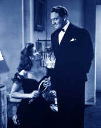
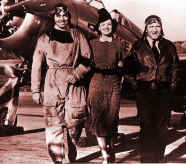

|
Spencer Tracy(1900-1967)
 The
quintessential actor's actor, Tracy never seemed like he was acting. His
natural power on the screen was inspiring. When Tracy spoke, audiences
believed every word. He made quite a few light comedies, but he was never
thought of as a comic actor, a tribute to his pure acting talent. He
was a leading man to many beautiful Hollywood stars, but his rugged,
street tough looks belied his star appeal.
Like many of
the early stars of "talkies," Tracy moved to Hollywood after
Broadway took notice of him in the prison drama The Last Mile.
After a series of minor films starting in Up the River(1930), Tracy
played the railroad tycoon in The Power and the Glory in 1933.
Sometimes our
earliest exposure to actors sets the indelible image in our memories. One
of the first films I remember crying at was Captain's Courageous.
Tracy won his first of two consecutive Best Actor Oscars® for his role as
the Portuguese fisherman Manuel. Tracy's first Academy Award nomination
for Best Actor came in San Francisco playing Father Tim Mullen, his
first co-starring role with Clark Gable in 1936. After winning the
following year, he followed up with another victory in 1938 as Father
Flannagan in Boys Town. He was also nominated for Father of the
Bride, Bad Day at Black Rock, The Old Man and the Sea, Inherit
the Wind, Judgment at Nuremberg and finally, Guess Who's
Coming to Dinner.
Tracy was
paired with some of the most glamorous Hollywood stars including Joan
Bennett, Jean Harlow, Faye Wray, Loretta Young, Bette Davis, Sylvia
Sydney, Myrna Loy, Joan Crawford, Hedy Lamarr, Claudette Colbert, Lana
Turner.
Tracy's most
memorable collaborations were with his off-screen lover Katharine Hepburn
and with Clark Gable, another star who defined rugged leading man in
different terms than Tracy. With Hepburn it was mostly the breezy battle
of the sexes comedies like Adam's Rib and State of the Union
or Pat and Mike. In all, Tracy and Hepburn starred in eight films
together. Playing opposite Gable earned him his first Oscar nomination in
San Francisco. They went on to make the enormously popular Test Pilot
and Boom Town as well.
Tracy's final film was Guess Who's Coming to
Dinner. It was fitting to share the screen with Katharine Hepburn one
final time and especially as man and wife, something Tracy's devout
Catholicism would not allow in real life.
Click on a poster
thumbnail image to see a larger view.
Click on a poster
thumbnail image to see a larger view.
|
|
|
|

Selections from the Feature
Archive include articles on Akira Kurosawa, Blonde Bimbos, Frank Darabont, Steven Culp, John Herzfeld or Vietnam: The Hollywood Pariah, and many
more....
The Bitch Brigade

A line-up of lean-lipped actresses who marched through
Hollywood in a high heeled goose step armed with razor sharp dialogue.
Click on the image to read all about them.


BargainFlix doesn't sell movies! We just tell you where to get them
for the best price! DVD reviews, giveaways and more.

ISF Monitor
Calibrations in the Tristate New York area. Lots of hardware
info and frequent hardware peaks from video expert Kevin Miller. They may
be judgmental, but that's the point, isn't it. Lots of DVD reviews plus
news and more.

A home theater site filled with a host of useful information, including
links to many other site.
Werner Herzog Film
![[ Werner Herzog ]](../images/werner-herzog.jpg)
The Web site of director Werner Herzog includes lots of great material. A
perfect stop for anyone who admires his films.

Manufacturer of computer-video interfaces, switchers, distribution
amplifiers, computer-video scan converters, and high resolution cable.
Found in many high end home theater systems.
MRQE
Find reams of movie and DVD reviews at the Movie Review Query
Engine, a index of reviews appearing on the Internet.

Nights of Cabiria(SE)A,A

Bravura simplicity of Fellini’s vision perfectly mates with the
unadorned tale of Cabiria, the feisty yet innocent prostitute. Don't pass
it up.

Click on the DVD MIA symbol for profiles of DVDs missing
in action.
Add films to the DVD MIA Master List by filling out a simple
form. Click Here
|